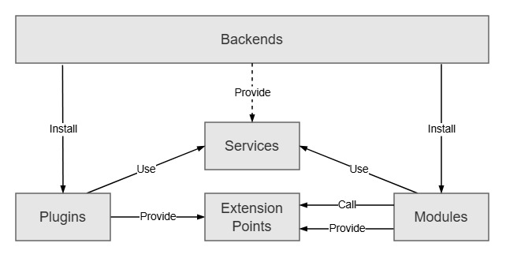
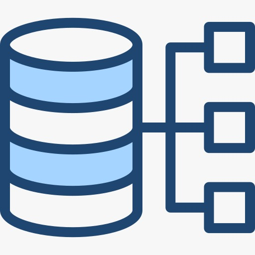

<section id="media">

    <h2>Learning Resources</h2>

    <article>

        <h3>Backend Illustrations</h3>

        <picture>

            <source media="(min-width: 800px)" srcset="../images/backend.jpeg">

            <source media="(min-width: 400px)" srcset="../images/server.jpeg">

            

        </picture>

        <figure>

            

            <figcaption>
                Figure 1: Database Management in Backend Development
            </figcaption>

        </figure>

    </article>

    <article>

        <h3>Audio Tutorial</h3>

        <audio controls>

            <source src="https://www.soundhelix.com/examples/mp3/SoundHelix-Song-2.mp3" type="audio/mpeg">

            <source src="https://www.soundhelix.com/examples/ogg/SoundHelix-Song-2.ogg" type="audio/ogg">

            Your browser does not support the audio element.

        </audio>

    </article>

    <article>

        <h3>Video Demonstration</h3>

        <video controls width="560" height="315">

            <source src="https://www.w3schools.com/html/mov_bbb.mp4" type="video/mp4">

            <source src="https://www.w3schools.com/html/mov_bbb.ogg" type="video/ogg">

            Your browser does not support the video tag.

        </video>

        <track kind="subtitles" src="captions.vtt" srclang="en" label="English">

    </article>

    <article>

        <h3>Learning Progress</h3>

        <p>
            Backend Development Progress:
            <progress value="72" max="100">72%</progress>
        </p>

        <p>
            Practical Assignment Completion:
            <meter value="8" min="0" max="10">80%</meter>
        </p>

    </article>

</section>